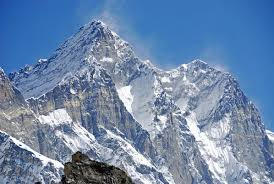

Lhotse
Lhotse
8.516m

Geografia
El Lhotse es la cuarta montaña más alta de la Tierra, sólo situada detrás del Everest, del K2 y del Kangchenjunga y se halla muy cerca y conectada al Everest a través del Collado Sur. Lhotse significa literalmente “Pico Sur” en tibetano. Además de la cumbre principal, con una altitud de 8.516 msnm, la montaña cuenta con dos picos subsidiarios, el Lhotse Medio (al este) de 8414 m y el Lhotse Shar de 8.383 msnm. La montaña se halla situada en la frontera entre la región sur del Tibet, en China, y la región de Khumbu, al norte de Nepal.
Primera ascension
18 de mayo de 1956
Primera ascension Invernal
23 de mayo de 2001
Volver a Inicio